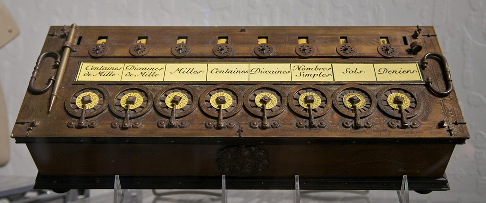

Когда появился первый компьютер?
На протяжении всей истории существования человека он то и дело пытался совершенствовать мир вокруг, чтобы улучшить свою жизнь сделать ее проще и комфортнее. История создания компьютера – это прежде всего стремление человека изобрести устройство для решения задач, непосильных для человеческого разума. И как показывает практика, задача эта исполнена на "ура".
Если вы думаете, что компьютер появился несколько десятилетий назад, то глубоко заблуждаетесь, ведь его история насчитывает несколько столетий. Конечно же, первые предки современного ПК были очень примитивными и даже язык не поворачивается назвать их "компьютерами", но не пройдя всех этих этапов становления он, возможно, не стал таким чудом техники
Итак, первым созданным компьютером в истории человечества считается машина для подсчетов Блеза Паскаля, возникшая в 1642 году. Это был первый примитивный калькулятор, который помогал изобретателю слагать и вычитать. Изобретение Паскаля считается нулевым этапом в разработке компьютеров и для своего времени это было прогрессивное устройство, ведь ранее никаких попыток механизировать вычисления не было.
Придуманный Паскалем "компьютер" назвали "Паскалина" и представлял он собой ящик с многочисленными шестернями. С помощью колесиков прибор позволял вводить числа от 0 до 9, а в верхней части корпуса, после ввода исходных данных, показывался результат.
Персональные компьютеры сегодня
История возникновения компьютера прошла долгий и тернистый путь и именно благодаря этому сегодня каждый из нас может использовать персональный компьютер с различными техническими наворотами. Но, оказывается, и тот вариант ПК, который мы используем сейчас, недостаточно совершенен и улучшается уже сегодня:
- Ученые Массачусетского технологического института работают над тем, чтобы устранить из персональных компьютеров провода. Это приспособление для передачи информации устарело и требует апгрейда - отличной заменой традиционным проводам станут импульсы германиевых лазеров, которые уже внедряют в компьютер.
- Интересным направлением развития современного ПК можно считать внедрение в него различных умных гаджетов. Умные часы, сенсоры сердцебиения, датчики осанки – все это мы видели вне персонального компьютера, теперь же ведутся работы по внедрению в него этих полезных для здоровья находок.
- В компьютер планируется внедрить новую технологию хранения данных – мемристорную память. Благодаря уникальным чипам из диоксида титана и платины компьютер сможет обрабатывать данные в 1 000 раз быстрее, совершать миллионы циклов перезаписи и моментально обрабатывать сведенья.
- Для современных компьютеров длительное хранение энергии также является проблемой, поэтому ведутся активные разработки в направлении инновационных батарей для компьютера, которые позволят заряжать и разряжать аккумулятор много тысяч раз.
- Последние разработки компьютеров и вовсе кажутся пугающими – нам предлагают совместить электронно-вычислительную машину с человеческим мозгом! Такая киборгизация компьютера предполагает присоединение своеобразной полимерной сетки с электродами к специальным имплантам-нейронам в мозге человека. Предполагается большой арсенал функций компьютера: от лечения болезни Альцгеймера и Паркинсона до управления сложными конструкциями силой мысли
История создания и развития компьютеров
Нулевой этап в разработке компьютера продлился достаточно длительное время, ведь история развития компьютеров была скачкообразной. Изобретение Паскаля получило свое совершенствование в 1671 году. Немецкий математик Густав Лейбниц изобрел на основе зубчатого колеса арифмометр, который "умел" выполнять не два, а четыре действия. После этого скачка в развитии компьютера наступило полуторавековое затишье, предшествующее грандиозному прорыву в развитии.